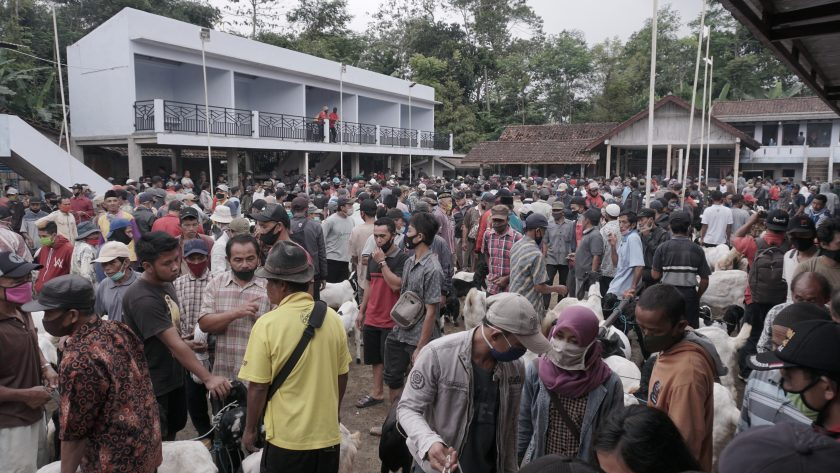
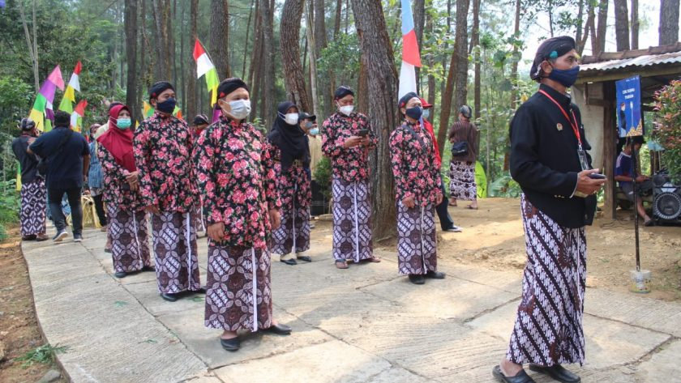

2022
Sejarah dan Daya Tarik
Sebelum Desa Pandanrejo terbentuk, dahulu terdapat suatu wilayah pedesaan di perbukitan menoreh bagian paling timur Kabupaten Purworejo. Tepatnya di area perbatasan Jawa Tengah (Jateng) dan Daerah Istimewa Yogyakarta (DIY). Di bagian timur bernama Desa Klepu dan pada bagian barat bernama Desa Pendem. Kedua desa ini mempunyai kebiasaan yang saling berhubungan. Budaya, sosial, dan ekonomi dari masyarakatnya saling melengkapi. Salah satu yang paling menonjol adalah beternak kambing peranakan etawa (PE) ras Kaligesing. Untuk memperluas wilayah desa, sekitar tahun 1927 keduanya sepakat untuk digabungkan menjadi Desa Pandanrejo. Nama Pandanrejo diambil dari ciri khas desa yang ketika itu banyak ditumbuhi tanaman pandan. Sedangkan kata ‘rejo’ memiliki makna berjaya. Dengan nama tersebut diharapkan desa ini akan terus bertumbuh dan berjaya.
Daya tarik dari Dewa Pandan yakni Pasar Seton, Puncak Gunung Gajah, Bukit Sibutrong, Kampung Cantik Kotakjati, edukasi Kambing PE Ras Kaligesing (kontes dan non kontes), edukasi susu, homestay, produk UMKM, souvenir, dan wisata budaya.

2022
Pasar Seton
“Pasar hewan ini dikenal dengan sebutan Pasar Seton karena digelar setiap Sabtu pagi hingga tengah hari,” ujar Supandi—Lurah Pandanrejo, Jual beli kambing PE di Pasar Seton kini telah menjadi budaya dan warisan turun-temurun. Kambing PE ras Kaligesing menjadi salah satu tumpuan ekonomi sebagian warga di daerah Perbukitan Menoreh ini.
Dalam sekali gelaran Pasar Seton, bisa terkumpul 500 hingga 1.000 ekor kambing PE yang diperjualbelikan. Transaksi jenis kambing PE katagori A memerlukan kelengkapan izin tertulis Bupati Purworejo. Demi memudahkan pelaku bisnis, proses izin ini dapat diurus belakangan.

2022
Baritan
Baritan diadakan setiap Bulan Rajab, dalam penanggalan Jawa. Rangkaian kegiatan dari Baritan yaitu bersih makam, kenduri agung (acara ritual doa dan makan bersama di balaidesa), proses siraman (memandikan pengantin kambing peranakan etawa ras Kaligesing), dan di tutup dengan pentas budaya.
Kedepannya, Baritan akan di jadikan salah satu wisata budaya di Dewa Pandan. Baritan ini digunakan sebagai event promosi ternak unggulan di Dewa Pandan yaitu kambing peranakan etawa ras Kaligesing. Kegiatan ini juga akan mengangkat olahan hasil bumi yang diproduksi oleh pelaku UMKM di Dewa Pandan. Event ini juga diharapkan mampu memperkenalkan budaya di Dewa Pandan sebagai pengetahuan kepada masyarakat luas serta dapat membantu meningkatkan perekonomian warga Dewa Pandan menjadi lebih baik.